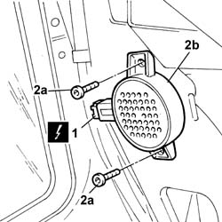

5580H12 parking obstacle detection device buzzer - r r
- Path
- Procedures > 55 ELECTRICAL EQUIPMENT > 5580 SPECIAL ACCESSORIES > 5580H parking obstacle detection device > 5580H12 parking obstacle detection device buzzer - r r
- Kind
- repair procedure (removal / refitting; the operation number is the code)
- Applies to
- all engines; all production periods
- Interactive page
- https://sloeber94.github.io/elrnDB-fPnd/en/#/2753021
Applies to: all engines; all production periods
 Removing
Removing
 Refitting
RefittingDisconnect the battery negative terminal.
7040B10 load platform (luggage platform) trim - r+r
7050A20 one-piece rear seat cushion - r r
7040H67 RIGHT REAR SIDE TRIM, WITH REAR PARCEL SHELF SUPPORT - R.R .
1. Disconnect the electrical connection for the parkign sensor speaker.
 | Name | Connector |
|---|---|---|
1 | Parking sensor speaker | P44 |
2. Undo the fixing bolts (2a) and remove the parking sensor speaker.

Applies to: all engines; all production periods
Refitting
RemovingFit the parking sensor speaker in place and secure it using the bolts.
Connect the electrical connection for the parking sensor speaker.
| Name | Connector |
|---|---|---|
- | Parking sensor speaker | P44 |
7040H67 RIGHT REAR SIDE TRIM, WITH REAR PARCEL SHELF SUPPORT - R.R .
7050A20 one-piece rear seat cushion - r r
7040B10 load platform (luggage platform) trim - r+r
Connect the battery negative terminal.